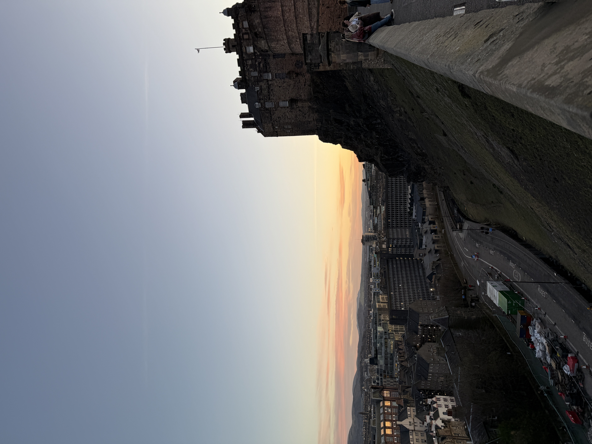

The City of Stories and Stone
Edinburgh is a place that feels like it was built for wandering — full of hidden alleys, rolling hills, and centuries of history layered together in the most beautiful way.
From climbing Arthur’s Seat for sunrise views to getting lost along the Royal Mile, every part of the city feels cinematic. It’s a perfect mix of adventure, mystery, and charm — the kind of city that makes you want to stay just a little bit longer.
Edinburgh Highlights



My Edinburgh Recommendations
- Edinburgh Castle
- Dean Village
- Victoria Street
- The Royal Mile
- Arthur’s Seat
- Bus tour through the Highlands
- Book a ghost tour!
- The Castle Arms
- Rocksalt Café
- Pho Edinburgh
- a&o Hostel